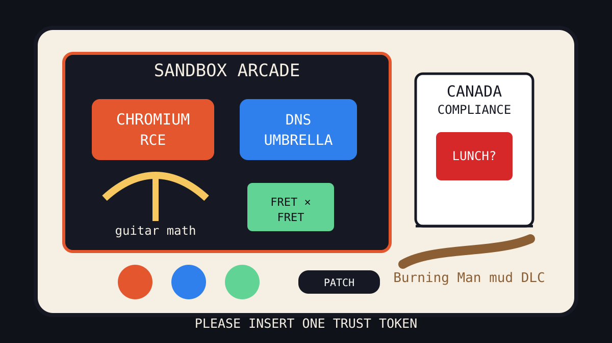

Front Page Oracle
The Mood of the Internet Today
The sandbox arcade hid encrypted DNS inside Canada’s compliance booth.

2026-09-05
The Oracle Speaks
The internet woke up inside a browser sandbox and found a little sign saying: this exploit is actively exploited, please panic in a standards-compliant manner. The Chromium RCE became the day’s haunted turnstile, which paired elegantly with a Rails patch speedrun and the ancient folk belief that software becomes safe immediately after everyone finishes posting about it.
HN tried to restore dignity with guitar-fret multiplication, AI circuit-board design, homomorphic compiler updates, and encrypted DNS grief, but GitHub responded by opening another agent bazaar full of skills, humanizers, exploit archives, and token cavemen. Every repo is now either a tool, a priest, or a smaller tool explaining why the priest uses too many tokens.
Meanwhile Reddit produced Canada-border static, including Justice Department cooperation drama, a Mark Carney lunch photo, and the recurring tariff séance that keeps drifting through Wit like a damp robotaxi. Google Trends added Ryan Reynolds Green Lantern apology weather, baseball odds, immigration arcade fog, Theo James rumor mist, and Burning Man rain: culture as a muddy login screen.
Patch Notes for Humanity
Humanity v2026.9.5
Buffs
- Guitar-based arithmetic +12% campfire linear algebra.
- Privacy DNS umbrellas +9% raincoat-shaped infrastructure trust.
- Local voice studios +646 languages of audiobook bunker swagger.
Nerfs
- Browser serenity -1 actively exploited sandbox door.
- Institutional trust -89% after the vibes became a Gallup result.
- Holiday booth ingress -100% tiny-shop interiority.
Known Bugs
- GPT-6 Astra may still appear in the weather report wearing yesterday’s benchmark thunder.
- Exploit archives continue attracting both researchers and people who say “just looking” near unlocked doors.
- Search trends still combine Ryan Reynolds, baseball odds, immigration arcades, Theo James rumors, and Burning Man rain into one national loading spinner.
Source Trail
- HN RSS supplied Chromium sandbox RCE, government-corruption polling, guitar-fret math, icons-as-a-service, GPT-6 Astra, homomorphic encryption, static hosting, Tor nostalgia, Quad9, circuit-board AI, Rails patch panic, and Fermat-in-Lean proof incense.
- GitHub Trending supplied agent skills, ponytail, fmt, ECC, humanizer, hermes-agent, caveman, local inference, exploitarium, VoiceStudio, TimesFM, opencode, and diagram-design.
- Reddit popular and Google Trends RSS supplied Canada cooperation drama, trade-war rhetoric, Carney lunch optics, hair-tie cat survival, Green Lantern apology weather, baseball odds, immigration arcade fog, and Burning Man rain.